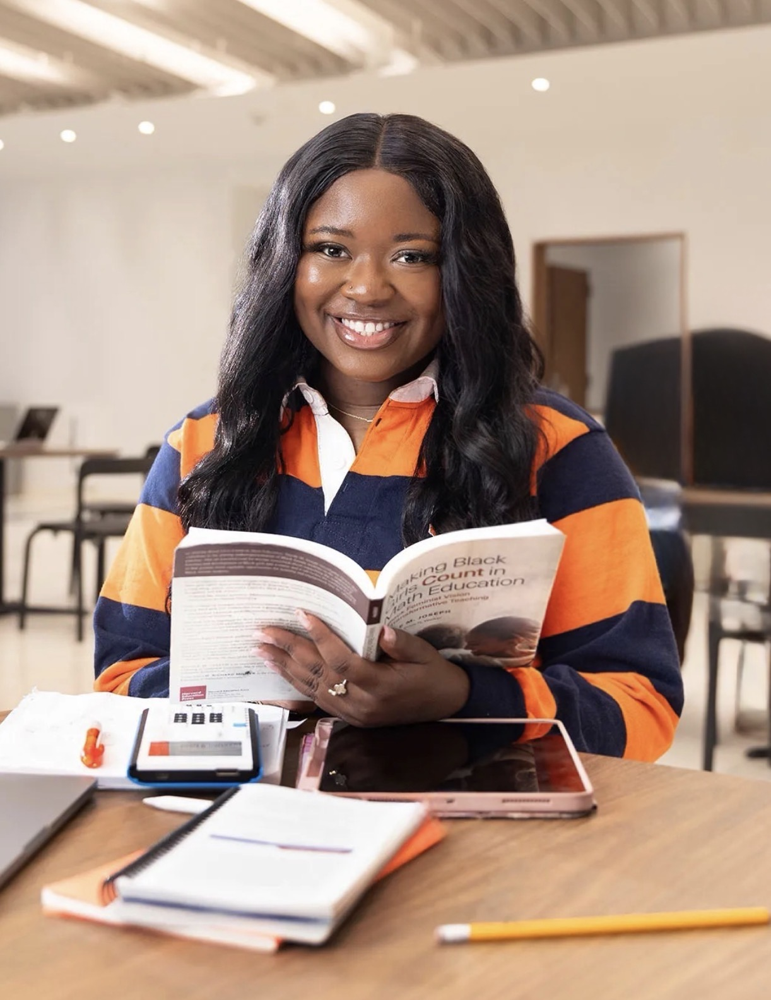

Engineer. Researcher. Builder.
Leveraging engineering and technology to design solutions and experiences that advance education, innovation, and meaningful community impact.
Learn more ↓I am a PhD student in Computer and Information Science and Engineering at Syracuse University, with a background in Computer Science and Engineering Management. My work focuses on optimizing systems through operations research, with a strong interest in how technology can improve real-world outcomes.
I am deeply passionate about teaching and creating accessible learning experiences. I enjoy breaking down complex ideas into something people can connect with and building environments where students feel confident exploring STEM.
As a first-generation college student from Kingston, Jamaica, my journey shapes how I approach my work. I founded STEAMfluence to provide hands-on STEM opportunities for underserved communities, turning a student initiative into a growing platform for impact.
— Henry Wadsworth Longfellow
"The heights by great men reached and kept were not attained by sudden flight, but they, while their companions slept, were toiling upward in the night."
Founded STEAMfluence, a STEAM summer program for students of color and underserved communities. Built on the foundation of Scholars on a Mission, STEAMfluence received the $5,000 Orange Innovation Fund grant from Syracuse University and was featured as an "Innovator in Action."
Engineered a scalable log-analysis pipeline at IBM Silicon Valley Lab using Granite and Llama models with LangGraph integrations. Deployed a multi-agent framework with IBM WatsonX Orchestrate ADK to fine-tune and consistently structure output across log files.
Founded and led Scholars on a Mission at Syracuse University — a student organization coordinating community service projects and mentorship programs among members of the Caribbean and African diaspora. Served as the foundation for STEAMfluence.
Designed and implemented UI pages for a gaming application and developed a static web app using React, HTML, and CSS during an internship at The Tech Garden in Syracuse.
Engineered a scalable AI log-analysis pipeline using Granite and Llama models with LangGraph integrations. Deployed a multi-agent framework with IBM WatsonX Orchestrate ADK across dev environments.
Pursuing a PhD in Computer and Information Science and Engineering with a 4.0 GPA. Research focuses on operations research, specifically optimizing delivery fleet routing and logistics. GEM Scholar, IBM Fellow, and Women in Science and Engineering Fellow. MS in Engineering Management completed May 2025.
Conducted interviews and facilitated research workshops exploring the experiences of undergraduate students of color in research, fostering an inclusive environment for dialogue and support.
Advised and mentored underrepresented STEM students, connecting them with academic resources, research opportunities, and professional development support.
Developed an events management application using QuickBase and built a SharePoint website for Cultural Programs.
Programmed mini network visualizations as gamification for experiments exploring the optimization of network interdiction problems. Automated experiment completion and generated results using Python.
Assisted Professors Zimmerman and Danna with research surrounding patents for various technological devices.
Assisted in the design and analysis of complex software and hardware systems, contributing to scalable and efficient solutions in system architecture.
Delivered systems and application solutions to strengthen and safeguard AIG's assets and stakeholders from threats.
Whether you're a researcher, collaborator, or someone whose work intersects with mine — I'd love to hear from you.